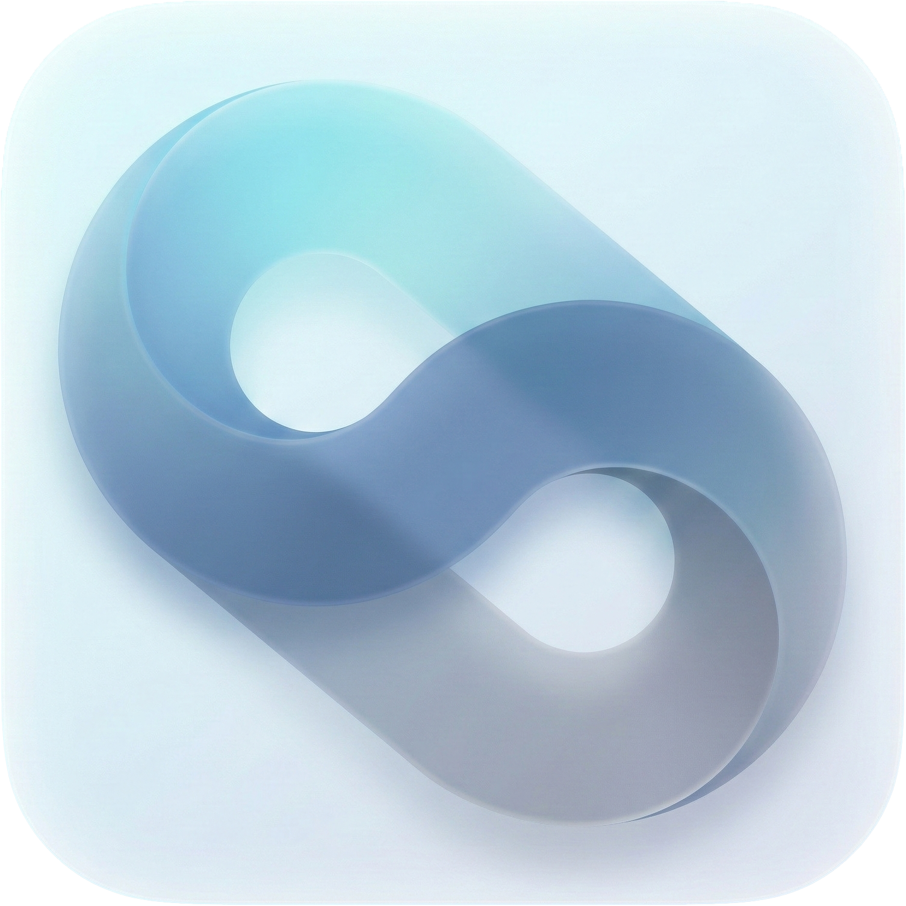

FluentOS – Synthèse & roadmap
Couche d’expérience pour Windows 11 • Version 0.1 – Proof of Concept
UX Layer · Windows 11 · Codixia
Positionnement
Pourquoi FluentOS existe
FluentOS n’est pas un nouveau système d’exploitation. C’est une couche d’expérience pour Windows 11, pensée pour rendre l’OS plus cohérent, plus lisible et plus agréable à utiliser, sans modifier le kernel ni détourner les mécanismes de sécurité.
Objectifs principaux :
- Réduire la fragmentation UX entre Win32, UWP, web et outils modernes.
- Apporter une identité visuelle fluide, inspirée de Fluent/Fluent 2, mais maîtrisée.
- Offrir des profils d’usage clairs (utilisateur, PME, flotte) avec des règles explicites.
- Rester entièrement réversible, scripté et documenté.
Ce que FluentOS est / n’est pas
FluentOS est :
- Une surcouche UX reproductible pour Windows 11.
- Un ensemble de presets, scripts et bonnes pratiques.
- Une base commune pour Core, Business et Fleet.
FluentOS n’est pas :
- Une ISO modifiée ou un fork de Windows.
- Un “theme pack” agressif ou non réversible.
- Un contournement des licences ou de la sécurité Microsoft.
Gamme produit
Les trois éditions FluentOS
Chaque édition cible un usage et un niveau de contrôle distinct. Le cœur technique est commun, mais le périmètre fonctionnel et le degré d’administration varient.
FluentOS Core
Visuel & utilisateur uniquement
- Refonte UX cohérente pour Windows 11.
- Profils clair/sombre, comportements unifiés.
- Scripts et réglages au niveau utilisateur.
- Aucune GPO, aucun verrouillage système.
- Destiné aux power users, devs, particuliers exigeants.
FluentOS Business
Image & contrôle léger (PME)
- Tout FluentOS Core.
- Branding entreprise (nom, logo, couleurs, fonds d’écran).
- GPO légères : Store, installation de logiciels, terminal…
- Préconfiguration de postes “prêts à l’emploi”.
- Ciblé TPE/PME, cabinets, agences, petites équipes.
FluentOS Fleet
Gouvernance & profils métiers
- Tout FluentOS Core + Business.
- GPO avancées et intégration AD/Intune.
- Profils métiers : accueil, compta, direction, dev, etc.
- Styles visuels différenciés mais cohérents.
- Déploiement et rollback à grande échelle.
Roadmap v0.1 → v1.0
Roadmap FluentOS
La roadmap se concentre d’abord sur la stabilité et la cohérence, puis sur l’industrialisation côté Business et Fleet.
| Version | Objectif principal | Contenu clé | Portée |
|---|---|---|---|
| v0.1 – POC | Valider la faisabilité technique et visuelle. |
- Orchestration des outils (Seelen, Windhawk, DWMBlurGlass, etc.) - Profils FluentOS Core (clair/sombre). - Scripts d’installation et de rollback. - Première identité visuelle (icône FluentOS). |
Core uniquement. |
| v0.2 – Consistency Layer | Stabiliser l’expérience utilisateur. |
- Règles UX documentées (dialogs, notifications, overlays). - Presets Core affinés (desktop, laptop, dev). - Clarification des fenêtres “intangibles” (pas de styling agressif). - Documentation d’installation détaillée. |
Core. |
| v0.3 – Business Ready | Préparer l’usage en petites structures. |
- Templates de branding (logo, couleurs, fonds d’écran). - Pack de GPO légères prêtes à l’emploi. - Script d’installation “poste de travail Business”. - Documentation à destination des responsables IT/TPE. |
Core + Business. |
| v0.4 – Business Branding | Affiner l’intégration visuelle entreprise. |
- Éléments de DA présents dans l’OS (écran d’accueil, sessions, menus). - Variantes par service (commercial, support, direction) au sein d’une PME. - Guides d’onboarding utilisateur simples. |
Business. |
| v0.5 – Fleet Preview | Introduire la logique flotte. |
- Profils métiers Fleet (compta, accueil, management, direction, dev…). - Intégration de base AD/Intune / scripts de déploiement massifs. - Jeux de GPO avancées documentées. |
Business + Fleet (préversion). |
| v1.0 – FluentOS Core Platform | Stabiliser la plateforme et la gouvernance. |
- API interne de configuration de profils. - Versionnage des presets et des politiques. - Documentation complète (technique, UX, déploiement). - Processus de contribution et de support communautaire. |
Core + Business + Fleet. |
Notes
Principes de conception & conformité
Principes de conception FluentOS :
- La lisibilité et la stabilité passent avant l’esthétique.
- Aucune fenêtre critique (UAC, Regedit, SmartScreen…) n’est stylisée de manière agressive.
- Tout changement doit être réversible par script.
- Les choix UX sont documentés, pas implicites.
Conformité et périmètre technique :
- FluentOS ne redistribue aucun binaire Microsoft.
- Pas de modification du kernel, du shell natif ou des mécanismes de licence.
- Appui exclusivement sur des APIs supportées, des GPO et des outils documentés.